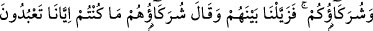

KIYÂMETTE MÜŞRİKLER
VE PUTLARI
28. O gün onların hepsini bir araya toplarız, sonra Allah’a ortak koşanlara:
“Haydi siz ve koştuğunuz ortaklar yerlerinize!” deriz. Artık onların aralarını
ayırmışızdır. Koştukları ortaklar: “Siz bize tapmıyordunuz.” derler.
29. “Şimdi bizimle sizin aranızda şahit olarak Allah yeter. Doğrusu biz sizin (bize)
tapınmanızdan tamâmen habersizdik!”
30. İşte orada her can, geçmişte yaptıklarını karşısında bulur. Artık onlar gerçek
sahipleri olan Allah’a döndürülürler ve uydurdukları şeyler kendilerinden kaybolup
gider.
“O gün” yani onları öyle bir gün ile korkut veya onlara öyle bir günü hatırlat ki o gün
“onların hepsini”; bir grup bile dışarıda kalmaksızın iyi amel işleyenlerin ve kötülük
kazananların hepsini “bir araya toplarız, sonra” bu iki gruptan “Allah’a ortak
koşanlara: “Haydi siz ve koştuğunuz ortaklar yerlerinize!” deriz. Artık onların
aralarını” müşrikler ile taptıkları ilâhların arasını “ayırmışızdır.” Alâkalarını ve
dünyada iken aralarında bulunan bağı koparmışızdır.
Böylece, tüm amelleri boşa gitmiş, istekleri kursaklarında kalmış, ilâhları ile ilgili
olarak ümid ettikleri şeylerin gerçekleşmeyeceği konusunda tam bir ümitsizliğe
kapılmışlardır. Bu durum, gerçi onlara öldükten ve azâba mübtelâ kılındıklarından beri
mâlumdur. Fakat bu derece kesin bir bilgi ancak bu durumla burun buruna gelip onu
müşâhede ettikleri zaman hâsıl olur.
Allah’ın bu ayırması, her ne kadar kıyamet günü gerçekleşecekse de vukûu kesin
olduğu için, şu anda olmuş gibi ifâde edilmiştir. Bu sebeple de “toplarız” “deriz”
lâfızlarından sonra “__WORD__ : ayırdık” şeklinde geçmiş zaman ifâdesi kullanılmıştır.
“Koştukları” ibâdet ettikleri, ortaklık isnâd ettikleri “ortaklar,” bunlar melekler,
Uzeyr, Mesih ve daha başka tapındıkları bilgi sahibi varlıklardır. Bu ortakların, putlar
olduğu da söylenmiştir. Her şeyi konuşturan Allah onları da konuşturacaktır. “Siz bize
tapmıyordunuz derler.”
Bu ifade, ortak koştukları şeylerin müşriklerin tapınmalarından berî olduklarını